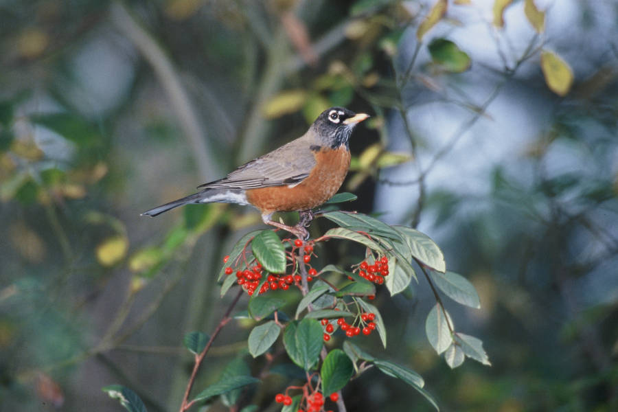

Mirlo Primavera (Turdus migratorius)

American Robin (Mirlo Primavera) - Karney, Lee USFWS 1
Descripción: Este miembro de la familia de los zorzales mide de 9 a 10 pulgadas de largo y pesa alrededor de 3 onzas. Los machos son de color marrón grisáceo con pechos redondos y rojizos, cabezas oscuras, y medias lunas blancas encima y debajo de cada ojo. Las hembras y los juveniles son similares pero de color más claro.
Migración & Hábitat: Los petirrojos pueden tolerar temperaturas frías, por lo que no migran a menos que se vean obligados por la escasez de alimentos y el mal tiempo. Por lo general, migran al suroeste, México y la costa del Golfo.
Mapa de rango desde, © Arizona Board of Regents/ASU Ask A Biologist. 2
Reproducción: Los petirrojos construyen nidos en árboles o arbustos con pasto, ramitas, raíces y lodo. La hembra pone de 3 a 5 huevos por nidada. y normalmente cría dos crías cada temporada. Los huevos eclosionan en aproximadamente 2 semanas y las crías abandonan el nido en 14 a 16 días.
Dieta: Su dieta consiste principalmente en invertebrados (como larvas, lombrices y orugas), frutas y bayas.
Estado de conservación: Los petirrojos en Oregón son más abundantes en el valle de Willamette y desde el condado de Lincon hacia el norte.3 Las poblaciones han aumentado ligeramente, y son una preocupación de conservación baja. La búsqueda de alimento en el suelo los hace vulnerables al envenenamiento por pesticidas y la depredación de los gatos.
Preparada por Vickie Stiteler
Créditos:
1Title: American Robin Credit: C Karney, Lee USFWS
Source:
https://digitalmedia.fws.gov/digital/collection/natdiglib/id/4488/rec/161
Rights: Public Domain
2Range Map: Dr. Biology (Pearson, David). (2017, July 13).
American Robin. © Arizona Board of Regents / ASU Ask A Biologist.
Source: Retrieved February 6, 2023, from
https://askabiologist.asu.edu/activities/bird/american-robin Rights: CC BY-SA 3.0
3Marshall, D.B., M.G. Hunter, and A.L. Contreras, Eds. 2003, 2006. Birds of Oregon: A General Reference.
Oregon State University Press, Corvallis, OR. 768 Pp.